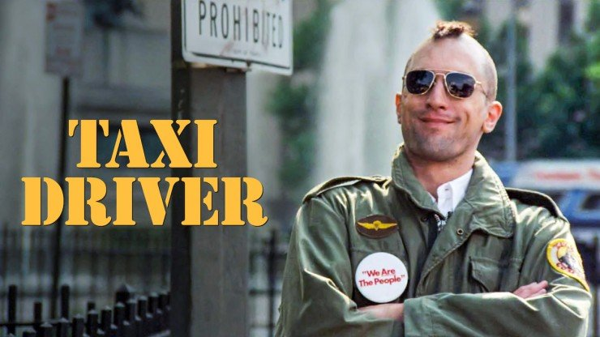

Hablemos de: Taxi Driver

Juan Mendez
Con motivo a la proyeccion de esta semana en la capilla Alfonsina (horarios en la barra de eventos), hoy hablaremos de Taxi Driver, una película de 1976 protagonizada por Robert De Niro, dirigida por Martin Scorsese y escrita por Paul Schrader.
La película es considerada no solo como una de las mejores hechas por Scorsese, sino que es también considerada como una de las mejores y más influyentes en la historia del cine. Podemos ver sus influencias en películas tan recientes como Joker (2019) dirigida por Todd Phillips, la cual trata temas similares.
Esto no es sorpresa para aquellos que han visto Taxi Driver >, ya que la temática que trata es ahora igual de relevante para nuestra sociedad como lo fue en el año que se estrenó, y gracias al talentoso elenco, a la visión de Scorsese y Schrader, y a una banda sonora legendaria compuesta por Bernard Herrmann, el filme ha logrado trascender los años y se ha mantenido relevante hasta hoy en día.
Para entender la razón detrás de la influencia y fama de Taxi Driver es necesario entender que trata de decir esta película.
Nuestro protagonista, Travis, un veterano de la guerra de Vietnam que ahora se encuentra en la ciudad de Nueva York trabajando como taxista en el turno nocturno, es un hombre solitario, el cual debido a su pasado y a su presente sufre de depresión e insomnio. Durante sus jornadas frecuentemente atiende a criminales y drogadictos, los cuales el detesta profundamente. Su decadente salud mental y lo que el considera la “escoria” de Nueva York llevan a Travis a cada vez tomar peores decisiones, las cuales llegan a la violencia extrema.
Gracias a su horario de trabajo, sus principales clientes son criminales de diferentes tipos, como asesinos, drogadictos y proxenetas. El ver a estos criminales llena a Travis de rencor e impotencia, y la única solución que el fantasear sobre eliminar a estar personas de una manera violenta.
De esta manera, la violencia se vuelve la única forma en la que Travis puede entender su realidad y la respuesta a todos sus problemas se vuelve la violencia. A pesar de que la ira de Travis sea justificada, sus pensamientos y acciones solo lo llevan a cometer actos violentos y desagradables, todo con el objetivo de ser aceptado por la sociedad.
Al finalizar la película cada persona llegara a una conclusión diferente sobre Travis. Algunos lo verán como un héroe, mientras que otros lo verán como un loco. Esta dualidad es lo que vuelve tan interesante a la película, y es uno de los aspectos esenciales que han logrado hacer que se siga hablando de ella después de todos estos años. Son estas conclusiones individuales las que nos permiten a cada uno de nosotros examinar nuestra propia relación con la violencia y la soledad.
Por esta y muchas otras razones Taxi Driver es una gran película que tienes que ver, no solo por el trabajo brillante de Scorsese o las grandes actuaciones, sino también por la oportunidad de entendernos a nosotros mismos y a la sociedad en la que vivimos. Disponible visitando la Capilla Alfonsina este próximo miércoles 6 de marzo a las 11:00am o a las 6:00pm en la Sala Minerva Margarita Villareal.